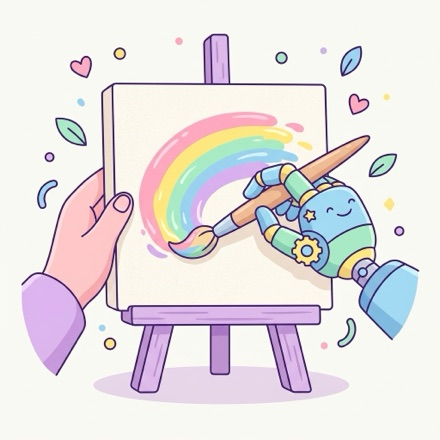
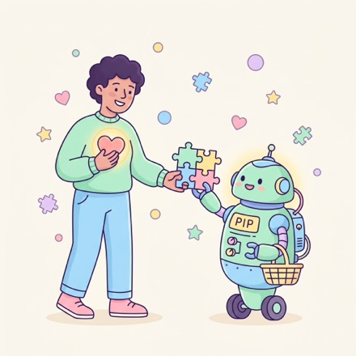
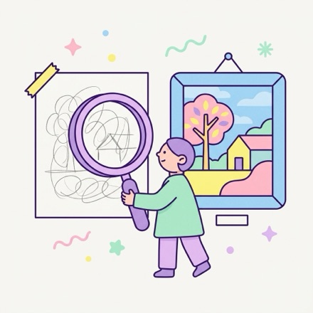
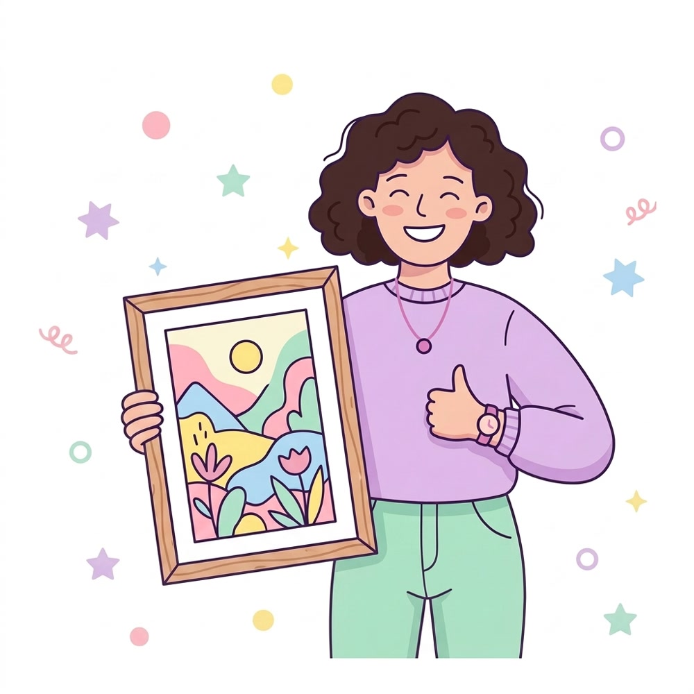

Creative contribution
Can creativity be shared between humans and AI?

Generative AI is changing not only how people create, but also what it means to support human creativity. Join us to rethink which parts of human creativity matter most, and how tools should support them.
15 min, an icebreaker
In small groups by medium, look at pairs of works and guess which one used AI. Then turn the cards over to see how each was made.
55 min
Regroup around the question you are most interested in, and write down perspectives, tensions, and open questions for HCI.
Creative contribution
Can creativity be shared between humans and AI?

Delegation
Which parts of creating do people want to keep for themselves?

Creative growth
What does it mean to grow as a creator when more of the creative process can be delegated?
Evaluation
How do we know whether a tool supports human creativity?

Anyone interested in how generative AI is changing human creativity. Many of us are both researchers and creative practitioners. There is nothing to prepare.
Share one work you made, with or without AI: a text, an image, a video, or a sound. We pair it with another work in the same medium. At the meet-up, attendees guess which one used AI, then read your note on how it was made.
Submit your work
University of Colorado Boulder
PhD student. Builds human-directable generative systems for filmmaking. Worked in film VFX and VR/AR production before research.
University of Toronto
PhD student studying computer-mediated communication. Led the Human-CAT Meet-Up at CHI 2026.
University of Virginia
Recently completed her PhD, building interactive human-AI systems for creative tasks, including PrevizWhiz.
Autodesk Research
Principal Research Scientist. Studies generative AI creativity support tools and how creative practitioners adopt them.
Microsoft Research
Principal Researcher. Develops real-time, direct-manipulation techniques for generative AI.
AIST
Chief Senior Researcher. Designs user interfaces for creativity support, such as TextAlive. Co-organized the Special Interest Group on Creativity and Cultures in Computing at CHI 2023.
KAIST and SkillBench
Associate Professor directing KIXLAB and co-founder of SkillBench. Designs interactive systems for generative AI.
The University of Tokyo
Professor working on user interfaces for content creation and on how such tools should evolve as content creation becomes easier and faster.
University of Colorado Boulder
Assistant Professor. Has co-organized workshops on XR and AI at UIST and CHI.
Optional. Papers behind the questions.